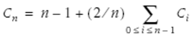

Table 3-2 summarizes the programs used to analyze Quicksort throughout this chapter.
Each individual step in the evolution of our code was pretty straightforward; the transition from the sample in Example 3-6 to the exact answer in Example 3-7 is probably the most subtle. Along the way, as the code became faster and more useful, it also shrank in size. In the middle of the 19th century, Robert Browning observed that "less is more," and this table helps to quantify one instance of that minimalist philosophy.
We have seen three fundamentally different types of programs. Example 3-2 and Example 3-3 are working Quicksorts, instrumented to count comparisons as they sort a real array. Example 3-4 through Example 3-6 implement a simple model of Quicksort: they mimic one run of the algorithm, without actually doing the work of sorting. Example 3-7 through Example 3-12 implement a more sophisticated model: they compute the true average number of comparisons without ever tracing any particular run.
The techniques used to achieve each program are summarized as follows:
Example 3-2, Example 3-4, Example 3-7: Fundamental change of problem definition.
Example 3-5, Example 3-6, Example 3-12: Slight change of function definition.
Example 3-8: New data structure to implement dynamic programming.
These techniques are typical. We can often simplify a program by asking, "What problem do we really need to solve?" or, "Is there a better function to solve that problem?"
When I presented this analysis to undergraduates, the program finally shrank to zero lines of code and disappeared in a puff of mathematical smoke. We can reinterpret Example 3-7 as the following recurrence relation:
This is precisely the approach taken by Hoare and later presented by D. E. Knuth in his classic The Art of Computer Programming, Volume 3: Sorting and Searching (Addison-Wesley). The programming tricks of re-expression and symmetry that give rise to Example 3-10 allow us to simplify the recursive part to:

Knuth's technique to remove the summation sign gives (roughly) Example 3-11, which can be re-expressed as a system of two recurrence relations in two unknowns as:
C0 = 0 S0 = 0 Sn = Sn-1 + 2Cn-1 Cn = n - 1 + Sn/n
Knuth uses the mathematical technique of a "summing factor" to achieve the solution:
Cn = (n + 1)(2Hn+1-2) - 2n ~ 1.386nlgn
where Hn denotes the nth harmonic number, 1 + 1/2 + 1/3 + … 1/n. Thus we have smoothly progressed from experimenting on a program by augmenting it with probes to a completely mathematical analysis of its behavior.
With this formula, we end our quest. We have followed Einstein's famous advice to "make everything as simple as possible, but no simpler."
Goethe famously said that "architecture is frozen music." In exactly that sense, I assert that "data structures are frozen algorithms." And if we freeze the Quicksort algorithm, we get the data structure of a binary search tree. Knuth's publication presents that structure and analyzes its runtime with a recurrence relation similar to that for Quicksort.
If we wanted to analyze the average cost of inserting an element into a binary search tree, we could start with the code, augment it to count comparisons, and then conduct experiments on the data we gather. We could then simplify that code (and expand its power) in a manner very reminiscent of the previous section. A simpler solution is to define a new Quicksort that uses an ideal partitioning method that leaves the elements in the same relative order on both sides. That Quicksort is isomorphic to binary search trees, as illustrated in Figure 3-1.
The boxes on the left show an ideal-partitioning Quicksort in progress, and the graph on the right shows the corresponding binary search tree that has been built from the same input. Not only do the two processes make the same number of comparisons, they make exactly the same set of comparisons. Our previous analysis for the average performance of randomizing Quicksort on a set of distinct elements therefore gives us the average number of comparisons to insert randomly permuted distinct elements into a binary search tree.